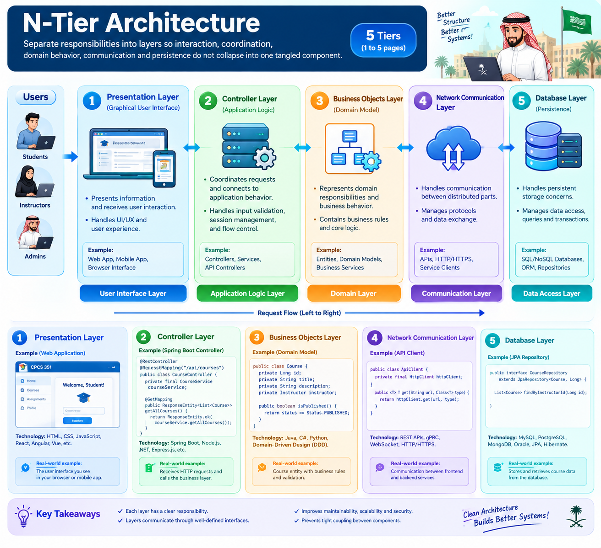

N-Tier Architecture
Separate responsibilities into layers so interaction, coordination, domain behavior, communication and persistence do not collapse into one tangled component.
Explain why the lecture maps interactive systems to N-Tier architecture and identify the responsibilities of its layers.
Requests move through clear responsibility boundaries

The interaction stays understandable while responsibilities stay separated
Interactive systems are organized around actor requests and system responses.
Each layer has a focused concern instead of every component doing everything.
Requests cross defined boundaries rather than arbitrary direct dependencies.
Stable interfaces can reduce how far a change propagates.
The lecture later shows the architecture as packages
The source N-tier package view separates GUI, network, business and database packages and uses «import» dependencies. Public and private elements inside packages show another level of boundary control.
Presentation-facing elements.
Communication concern.
Checkout, return, loan, document, patron.
Persistence responsibility.
Dependencies become explicit.
N-Tier is not “five folders.” It is separation of responsibility through architectural layers and interfaces.